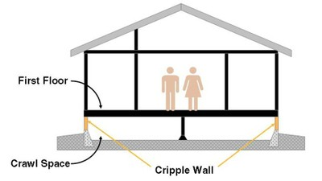
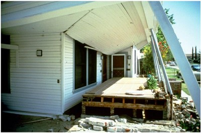

Muro débil [CRW]
Un muro débil es una pared cuya altura es menor a la del piso completo, y por lo general se produce entre la cimentación y la planta baja del edificio (creando así un semisótano) . Estas paredes son débiles porque están normalmente enfundadas con sólo estuco o revestimiento de madera horizontal en el lado exterior de la pared . Estos materiales son métodos de arriostramiento inadecuados . Se han observado en terremotos daños y colapso de estructuras antiguas de madera al nivel de los muros débiles.

Muro débil y semisótano(FEMA G225)

Colapso de casa de pórticos de madera deslizándose sobre el muro débil, terremoto de 1983 Coalinga, California (EERI)

Falla de muro débil en el terremoto de 1971 San Fernando, California (Courtesy of K.V. Steinbrugge and the NISEE, University of California, Berkeley)